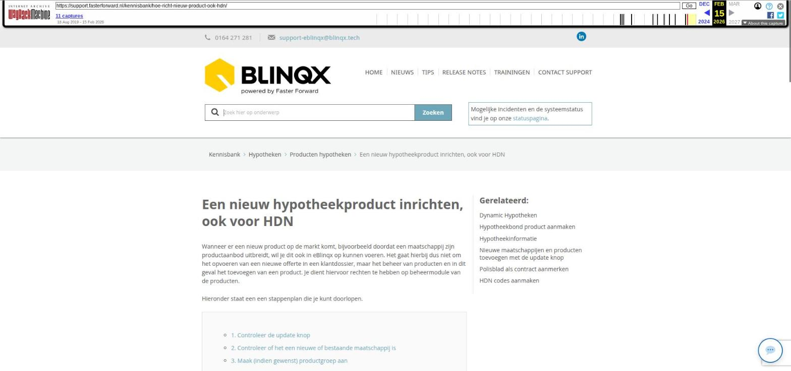

Een nieuw hypotheekproduct inrichten, ook voor HDN

Tekstinhoud
Een nieuw hypotheekproduct inrichten, ook voor HDN
Wanneer er een nieuw product op de markt komt, bijvoorbeeld doordat een maatschappij zijn productaanbod uitbreidt, wil je dit ook in eBlinqx op kunnen voeren. Het gaat hierbij dus niet om het opvoeren van een nieuwe offerte in een klantdossier, maar het beheer van producten en in dit geval het toevoegen van een product. Je dient hiervoor rechten te hebben op beheermodule van de producten.
Hieronder staat een een stappenplan die je kunt doorlopen.
1. Controleer de update knop
2. Controleer of het een nieuwe of bestaande maatschappij is
3. Maak (indien gewenst) productgroep aan
3. HDN codes
4. Product aanmaken
1. Controleer de update knop
Nieuwe producten en maatschappijen bieden wij aan via de update-knop. Met een paar klikken instaleer je de nieuwe producten in jouw omgeving. Onderstaande stappen hoef je dan niet meer te doorlopen.
Staat het nieuwe product er niet tussen, stuur dan een e-mail naar support-eblinqx@blinqx.tech met de informatie over het nieuwe product. Let op: dit geldt alleen voor compleet nieuwe producten. Bestaande maatschappijen en producten die niet in jouw omgeving staan dien je zelf toe te voegen met onderstaand stappenplan.
2. Controleer of het een nieuwe of bestaande maatschappij is
Voordat je het nieuw product aan gaat maken dienen er een aantal basis voorwaarden aanwezig te zijn. Allereerst dient het product onder een maatschappij komen te staan. Ga naar beheer – organisatie & personen en zoek op de maatschappij.
Is de maatschappij deze reeds aangemaakt en als maatschappij ingericht? Dan kan je hieronder naar de volgende stap gaan. Indien de maatschappij nog niet in je eBlinqxomgeving bestaat en je wil deze toevoegen, lees dan deze pagina.
3. Maak (indien gewenst) productgroep aan
Gebruik je een bestaande groep (met een bestaande maatschappij)? Dan kun je deze stap overslaan.
Indien het een geheel nieuwe maatschappij betreft, kan je een productgroep aan te maken. De productgroep wordt gekozen aan de linkerkant bij het opvoeren van het product in het dossier (veld 'productgroep'). Het aanmaken van een productgroep is niet verplicht.
Klik hier voor meer uitleg over het aanmaken van een productgroep.
3. HDN codes
Wanneer de maatschappij gebruik maakt van HDN, dan dien je in het product ook de HDN codes juist in te voeren. eBlinqx heeft deze nodig voor het herkennen van het product wanneer het advies binnenkomt via jouw adviespakket.
Uitleg over het aanmaken van HDN codes lees je hier.
4. Product aanmaken
4a. Ga naar product onder leverancier
Ga hiervoor naar de module "Producten", kies vervolgens voor "Productbeheer".
Zoek in het tabblad 'Leverancier' bij Naam de organisatie waarvoor je het product wilt aanmaken en klik hierop.
4b. Maak een nieuw product aan
Je komt vervolgens in het scherm "Product". Hier vind je alle bestaande producten die gekoppeld zijn aan de maatschappij. Klik hier op het 'plusteken' linksboven om een nieuw product aan te maken.
Het veld leverancier is al gevuld met de hier voor geselecteerde organisatie. Kies daaronder bij type product voor 'Hypotheek' en geef het product een Naam.
Nu zal het scherm automatisch een aantal velden laten zien die gevuld moeten worden. Hier kies je voor een eerder aangemaakte productgroep en kies je een categorie.
Indien de categorie die je zoekt er niet tussen staat is het mogelijk om een nieuwe categorie toe te voegen. Lees hier hoe je een nieuwe categorie aanmaakt.
Vul alle andere velden, zoals HDN codes, ook in.
Hier lees je meer informatie over het Hypotheekbond product.
Laatste update: 15 oktober 2025
Was deze informatie nuttig?
Ja Nee